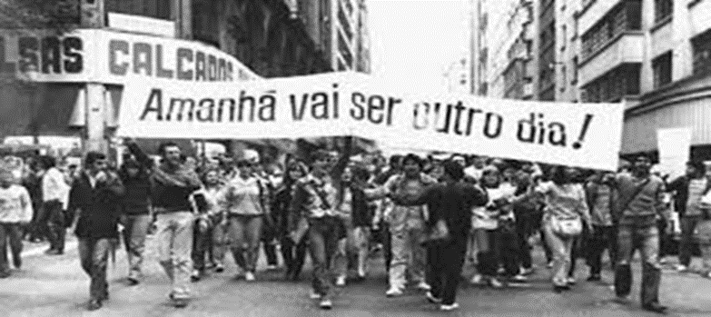
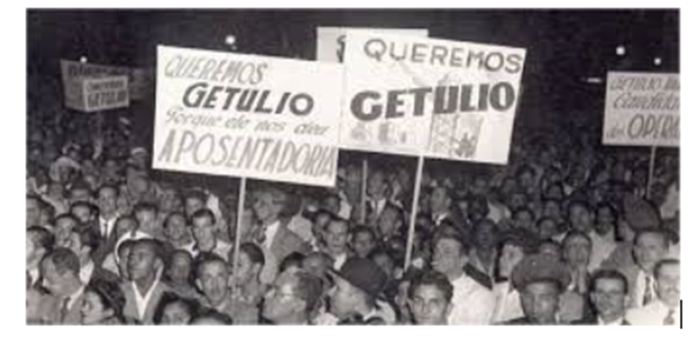

Blog de investigação histórica estudantil dos alunos da 3ª série de tempo integral do Cetib
Narrativas históricas construídas por estudantes a partir de evidências históricas levantadas de investigação de fontes históricas.

É importante termos consciência de que o estudo do passado pode nos possibilitar uma melhor orientação sobre o tempo presente para que o futuro seja construído por nós de acordo com o nosso desejo de vivermos numa sociedade mais justa e com oportunidade para todos.
Era Vargas: Realmente chegou ao fim?
Por que esse período ainda é tão importante nos dias atuais?
Por: Albert Meira, Moânia Loren
Publicado em: 21/11/2024
Desfile cívico no Dia do Trabalhador, durante o governo de Vargas em 1942.
Com certeza você já ouviu muito falar sobre Getúlio Vargas e seu governo, certo? Entretanto, já se perguntou o porquê ainda se discute tanto sobre esse período? É fundamental o entendimento e o estudo sobre essa época, para que possamos compreender melhor o nosso presente.
A era Vargas foi marcada por muito autoritarismo e censura. Getúlio iniciou seu governo através de um golpe de estado, o que já demonstra sua prepotência. Vargas ficou no poder durante 15 anos e durante sua gestão (grande parte sem ele estar eleito) havia muita repressão a movimentos comunistas, centralização do poder, hipocrisia e principalmente grande manipulação. Inclusive uma das medidas tomadas por ele em sua presidência foi o DIP (Departamento de imprensa e propaganda) que era responsável por censurar tudo aquilo que era contra seu interesse.
É importante lembrar que essa manipulação presente em seu governo era velada e a população não se dava conta da sua alienação, por isso a população considerava Vargas como um herói, o endeusando e glorificando, apesar do perfil autoritário e golpista de Vargas. Getúlio usava constantes frases para contribuir com a manipulação em massa, entre as mais famosas estão: “Vargas o pai dos pobres”, “amigos das crianças”.
Dando esse pulo no passado, percebe-se então, que e primordial o estudo e conhecimento sobre a história, para que sejamos mais críticos e conscientes, e não nos tornamos fácies de manipular e enganar. Para assim tomarmos boas escolhas e pensarmos melhor na hora de escolher nossos representantes políticos.
A HISTÓRIA POR TRÁS DAS CÂMERAS NA ÁREA VARGAS
Veja como foi o período do Presidente Getúlio Vargas e suas consequências para a sociedade brasileira.
PRODUTORES: Carlos Breno e Nícollas da Silva Meira Umburanas
DATA: 21/11/2024
Em 1889, o Brasil deixou de ser uma monarquia e se tornou uma república, resultando em um período de várias mudanças e de um movimento organizado por militares e outros grupos que desejavam um novo tipo de governo. No entanto, a democracia ainda está em construção e enfrenta muitos desafios nos dias atuais.
Getúlio Vargas governou por 15 anos em um período marcado por grandes mudanças e crises. Suas ações foram muitas vezes controversas e o seu governo é visto por alguns como uma ditadura e por outros como um período de desenvolvimento nacional.
A democracia brasileira é um processo contínuo e está sempre em construção. Hoje enfrenta desafios como a desigualdade social, a corrupção e a violência. Entretanto, também teve avanços importantes como a liberdade de expressão e o direito ao voto.
O estudo da Era Vargas ajuda a entender melhor o passado do Brasil e a construir um futuro mais justo e democrático. Ao analisar, pode-se aprender sobre os impactos das políticas públicas na sociedade brasileiras e a importância da participação cidadão na política.
Acesse aquiA NOVA ERA: DA MONARQUIA À DEMOCRACIA – ERA NOVA, BRASIL NOVO!
Como foi a transição de Monarquia à Democracia no território nacional?.
Por: Allícia Santos e Luyse Lorrany
Data: 21 de Novembro de 2024
No ano de 1989, o Brasil abandonou a monarquia para se tornar uma república. Desde então, passou por diversas fases do governo até consolidar-se como uma Democracia. Uma dessas fases foi marcada pela figura de Getúlio Vargas que governou o país por 17 anos.
Getúlio Vargas, um dos líderes mais “carismáticos” e controversos do país chegou ao poder em 1930, após liderar a Revolução que derrubou o então presidente Washington Luís. O início de seu governo foi marcado pela centralização do poder e a implementação de políticas populistas que buscavam “atender” às demandas dos trabalhadores.
No entanto, Getúlio Vargas não conquistou o poder de forma democrática, visto que quem ganhara as eleições fora Júlio prestes, mas o perspicaz Vargas agio contra a democracia e assumira o poder de forma autoritária.
O estudo da Era Vargas nos permite compreender como o Brasil se transformou ao longo do século XX, enfrentando desafios políticos e sociais para se consolidar como uma Democracia. A análise crítica desse período é fundamental para entendermos a base da política brasileira atual e refletirmos sobre o papel dos líderes políticos na construção do pais que desejamos
Trabalhadores homenageiam Getúlio Vargas na Esplanada do Castelo, em 1940, no Rio de Janeiro
O Estado e suas Verdades
Produtores: João Henrique Sousa Silva e João Victor Ribeiro Ataíde Reis
Data: 21/11/2024
Em primeira instância, o Brasil deixou de ser uma Monarquia para se transformar em uma República, onde a democracia, foi implantada por pouco tempo, destacando assim, a fragilidade desse sistema.
Contudo ao longo da nossa história, foram vários os exemplos de quando a democracia esteve em perigo ou até mesmo em risco. Podendo citar o golpe de 1964, o impeachment em 2016. Dentre eles a maior semelhança são as ameaças à democracia que no final oprimem o povo e fazem-lhe se sentirem impotentes perante ao Estado.
Em acordo com o viés democrático, o período que mais marcou o Brasil sem dúvidas, foi o do governo de Getúlio Vargas, que nesses 17 anos demonstrou-se ser autoritário, bastante bipolar e, além de tudo, manipulador tendo em vista que o próprio criou o jornal do Governo para manter as pessoas acreditando no que o próprio GV queria, dessa forma pode concluir que, fora todas as formas de censura ele ainda queria transformar as pessoas em simples robôs.
Diante disso, tem se a total noção de que o Estado por si só não se importa de fato com os cidadãos, descumprindo assim com o maior dever do Governo que é garantir ao cidadão segurança e qualidade de vida.
A luta pela democracia efetiva no Brasil – Vermelho
DEMOCRACIA E SUAS FACES
“A democracia e suas várias faces ao longo da história”
PRODUTORES: Jonathan dos Santos & João Gustavo Rodrigues
DATA: 21/11/2024
A democracia brasileira, embora bem elaborada, já teve seus momentos difíceis ao longo da história, como golpes de estado, atentados as constituições, ditaduras e regimes militares, fragilidade nos três poderes, entre outros.
O governo de Vargas, foi um exemplo de oscilação democrata no país, ocorrendo momentos críticos como a ditadura militar em 1937, registrando um estado autoritário e opressor e em muitas situações acontecendo várias censuras. Porém, houve pontos positivos como a criação da carteira de trabalho, modificações positivas nos panoramas eleitorais.
Ampliação de leis, fortalecimento da constituição, direitos humanos, aprimoramento dos três poderes é algo atual na democracia brasileira, mas sempre com brechas e atentados, como a invasão ao congresso em Brasília no dia 8 janeiro.
O estudo histórico sobre “Era Vargas” me fez entender como o sistema brasileiro se reflete a cada ano que se passa e a tentativa de ter uma democracia justa para todos. Outra relação foi as semelhanças em campanhas eleitorais e a idolatria aos candidatos.
